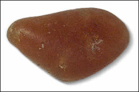

How do we know?Semi-precious stones and other raw materials such as tin were brought into Indus Valley cities from areas to the east of the Indus Valley. For example, mines have been found in the Aravalli Hills which would have supplied many craftsmen in the Indus Valley with the uncut stone needed to make carnelian beads. 
Unpolished carnelian Sources for other types of materials used in Indus Valley cities have been found as far away as Afghanistan. |